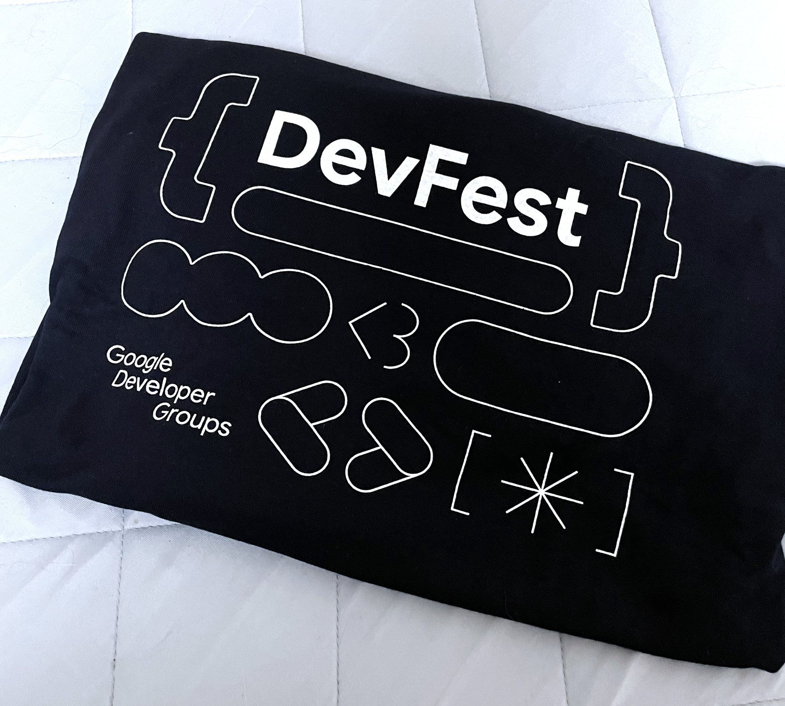

2024 – 2026
GDGoC · 팀 리더 (CookieDough · DevRel)
구글 개발자 학생 커뮤니티 GDGoC에서 Unity 개발팀 ‘CookieDough’를 이끌었고, 이후 행사 기획과 부스 운영을 맡는 DevRel 팀의 리더가 됐습니다.

Google Developer Groups on Campus(GDGoC)에서 Unity 중심 개발팀 ‘CookieDough’의 팀 리더를 맡았습니다.
한 학기 동안 Unity 스터디를 직접 기획하고 운영하며 기초 개념부터 실습, 프로젝트 제작까지 단계별 커리큘럼을 짰습니다. 매주 학습 인증과 진행 상황을 공유해 팀원들이 끝까지 참여하도록 했고, 함께 2D·3D 미니게임을 만들었습니다.
활동을 인정받아 운영진 제안을 받았고, 2025년 하반기부터 2026년 상반기까지 DevRel 팀의 팀 리더로 활동했습니다. 커뮤니티 행사를 기획하고, 부스를 운영하고, 멤버들이 서로 친해질 수 있는 자리를 만들었습니다.
혼자 공부하던 습관에서 벗어나, 함께 배우며 성장하는 즐거움을 알게 된 경험입니다.